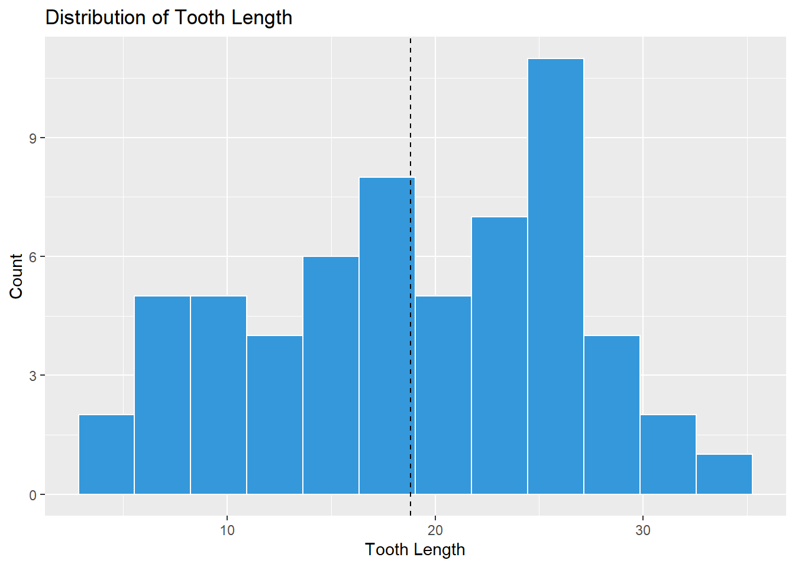
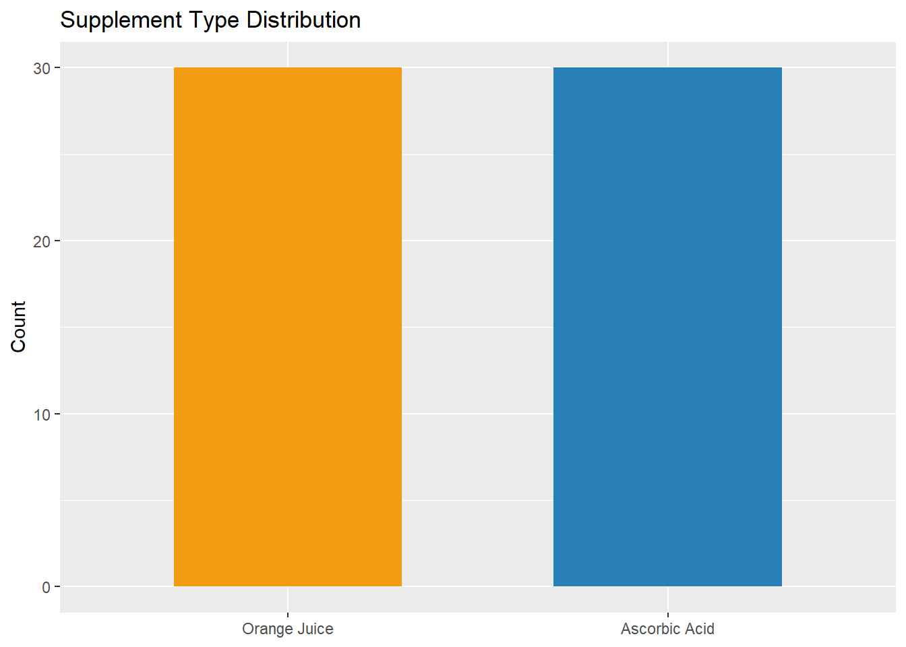
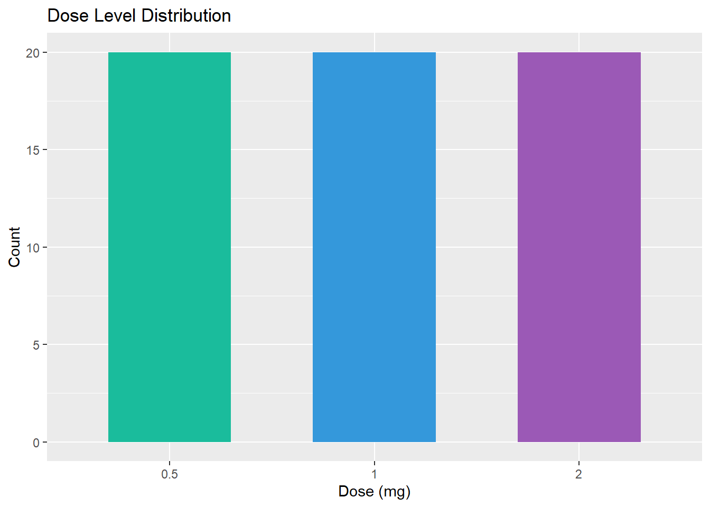
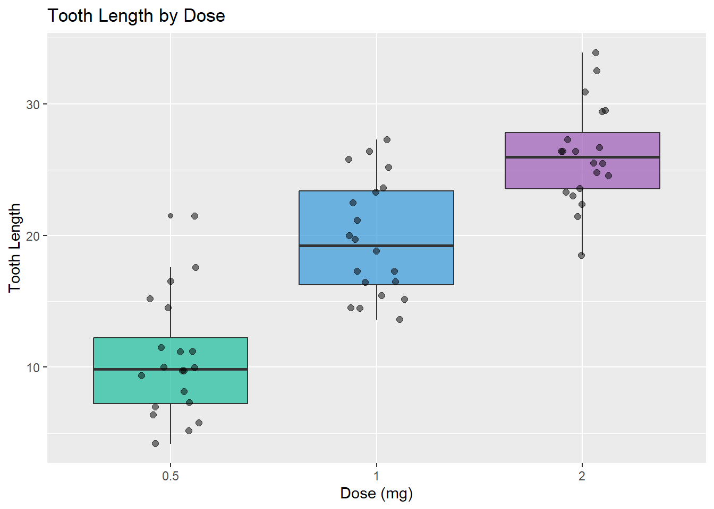
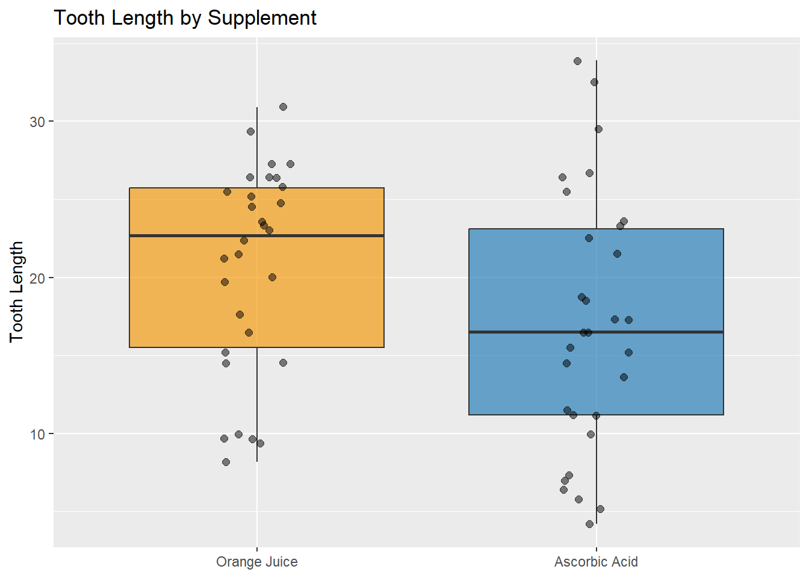
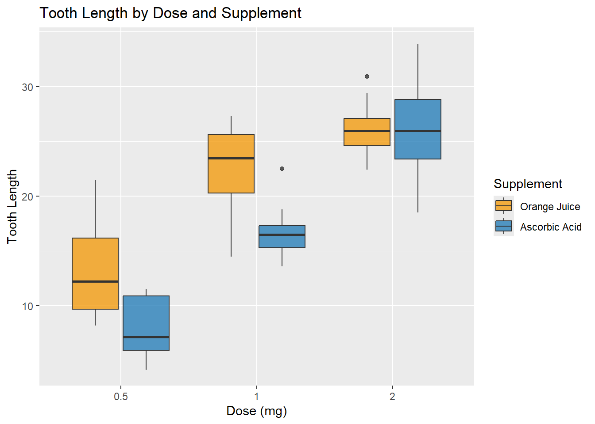
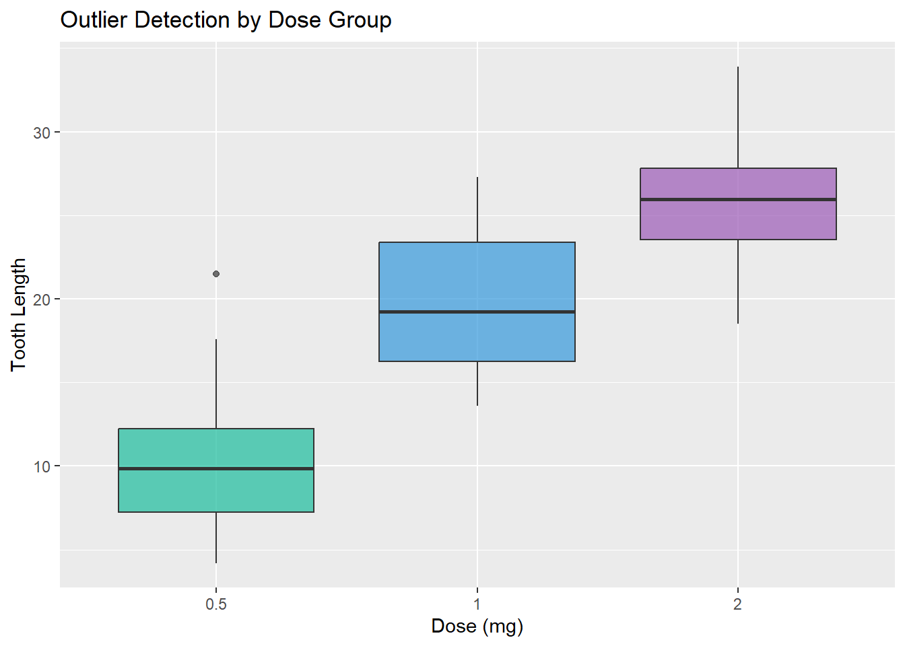
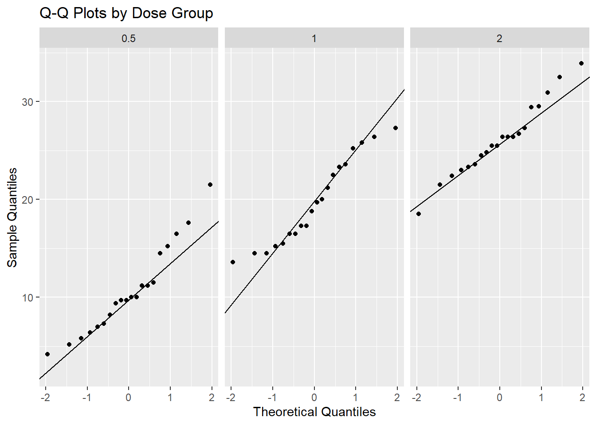

I selected the ToothGrowth dataset because it allows analysis of how vitamin C dosage and delivery method affect tooth growth in guinea pigs under controlled experimental conditions.
Part 1 — Understanding the Context
The ToothGrowth dataset comes from a 1947 experiment studying the effect of vitamin C on tooth growth in 60 guinea pigs.
Each row represents one guinea pig.
Variables:
len: Tooth length (numeric, response variable)
supp: Supplement type — OJ (Orange Juice) or VC (Ascorbic Acid)
dose: Dosage level — 0.5, 1, or 2 mg/day
This is experimental data because treatments were assigned deliberately.
This data can support decisions about whether dosage and supplement type influence tooth growth. It should not be used to make medical conclusions about humans.
len supp dose
Min. : 4.20 OJ:30 Min. :0.500
1st Qu.:13.07 VC:30 1st Qu.:0.500
Median :19.25 Median :1.000
Mean :18.81 Mean :1.167
3rd Qu.:25.27 3rd Qu.:2.000
Max. :33.90 Max. :2.000
anyNA(tg_clean)
[1] FALSE
sum(duplicated(tg_clean))
[1] 5
The dataset contains 60 observations and 3 variables. There are no missing values and no duplicate rows.
2.2 Logical Validation
tg_clean %>%distinct(dose)
# A tibble: 3 × 1
dose
<dbl>
1 0.5
2 1
3 2
range(tg_clean$len)
[1] 4.2 33.9
tg_clean %>%count(supp)
# A tibble: 2 × 2
supp n
<fct> <int>
1 OJ 30
2 VC 30
All tooth lengths are positive (4.2 to 33.9). Dose values are limited to 0.5, 1, and 2. The supplement groups are balanced with 10 observations per cell.
Part 3 — Data Cleaning
No cleaning was required because the dataset contains no missing, inconsistent, or out-of-range values. The original dataset is preserved as tg_original.
This new variable categorizes growth relative to the average for easier pattern detection.
Part 5 — Univariate Exploration
Tooth Length Distribution
ggplot(tg_clean, aes(x = len)) +geom_histogram(bins =12, fill ="#3498DB", color ="white") +geom_vline(xintercept =mean(tg_clean$len), linetype ="dashed") +labs(title ="Distribution of Tooth Length", x ="Tooth Length", y ="Count")

The distribution is approximately symmetric. The mean and median are close, with a considerable spread suggesting treatment effects explain much of the variation.
Supplement Frequency
ggplot(tg_clean, aes(x = supp, fill = supp)) +geom_bar(width =0.6) +scale_fill_manual(values =c("Orange Juice"="#F39C12", "Ascorbic Acid"="#2980B9")) +labs(title ="Supplement Type Distribution", x =NULL, y ="Count") +theme(legend.position ="none")

The dataset is evenly split between supplement types (30 each).
Dose Frequency
ggplot(tg_clean, aes(x = dose, fill = dose)) +geom_bar(width =0.6) +scale_fill_manual(values =c("#1ABC9C", "#3498DB", "#9B59B6")) +labs(title ="Dose Level Distribution", x ="Dose (mg)", y ="Count") +theme(legend.position ="none")

Each dose level has 20 observations — a balanced design.
Part 6 — Bivariate Exploration
Dose vs Tooth Length
I expected higher doses to produce longer teeth since vitamin C supports tissue growth.
ggplot(tg_clean, aes(x = dose, y = len, fill = dose)) +geom_boxplot(alpha =0.7) +geom_jitter(width =0.15, alpha =0.5, size =2) +scale_fill_manual(values =c("#1ABC9C", "#3498DB", "#9B59B6")) +labs(title ="Tooth Length by Dose", x ="Dose (mg)", y ="Tooth Length") +theme(legend.position ="none")

Tooth length clearly increases with dosage, confirming the expectation. The relationship is monotonic and strong.
Supplement vs Tooth Length
I expected Orange Juice to be slightly more effective than Ascorbic Acid.
ggplot(tg_clean, aes(x = supp, y = len, fill = supp)) +geom_boxplot(alpha =0.7) +geom_jitter(width =0.1, alpha =0.5, size =2) +scale_fill_manual(values =c("Orange Juice"="#F39C12", "Ascorbic Acid"="#2980B9")) +labs(title ="Tooth Length by Supplement", x =NULL, y ="Tooth Length") +theme(legend.position ="none")

Orange Juice shows a moderately higher median, but the distributions overlap. The effect is weaker than the dose effect.
Part 7 — Multivariate Exploration
ggplot(tg_clean, aes(x = dose, y = len, fill = supp)) +geom_boxplot(alpha =0.8) +scale_fill_manual(values =c("Orange Juice"="#F39C12", "Ascorbic Acid"="#2980B9")) +labs(title ="Tooth Length by Dose and Supplement",x ="Dose (mg)", y ="Tooth Length", fill ="Supplement")

Orange Juice outperforms Ascorbic Acid at lower doses (0.5 and 1 mg), but the two supplements converge at the highest dose (2 mg). This interaction suggests that at high doses, the delivery method becomes irrelevant.
Part 8 — Outliers and Anomalies
ggplot(tg_clean, aes(x = dose, y = len, fill = dose)) +geom_boxplot(alpha =0.7) +scale_fill_manual(values =c("#1ABC9C", "#3498DB", "#9B59B6")) +labs(title ="Outlier Detection by Dose Group", x ="Dose (mg)", y ="Tooth Length") +theme(legend.position ="none")

Some high tooth length values appear as boxplot outliers, but they are rare and valid observations rather than data errors. When viewed within their treatment groups, they fall within expected ranges.
Part 9 — Assumptions Checking
ggplot(tg_clean, aes(sample = len)) +stat_qq() +stat_qq_line() +facet_wrap(~dose) +labs(title ="Q-Q Plots by Dose Group", x ="Theoretical Quantiles", y ="Sample Quantiles")

The distributions are approximately normal within each dose group. The relationship between dose and tooth length is monotonic. Observations are independent since each guinea pig received only one treatment. No time variable is involved.
Part 10 — Iteration Reflection
Initially, dose was treated as numeric but later converted to factor for proper grouping in boxplots. Keeping a numeric version for the LOESS curve in Part 6 revealed potential nonlinearity.
The multivariate plot in Part 7 revealed that the OJ advantage disappears at high doses — something not visible in the bivariate plots. This changed my understanding of the data completely.
Outliers that looked concerning in the overall distribution made perfect sense when analyzed within treatment groups, teaching me to always consider group context.
Creating the growth_level variable mid-analysis helped identify that most “Low” growth cases came from the 0.5 mg group.